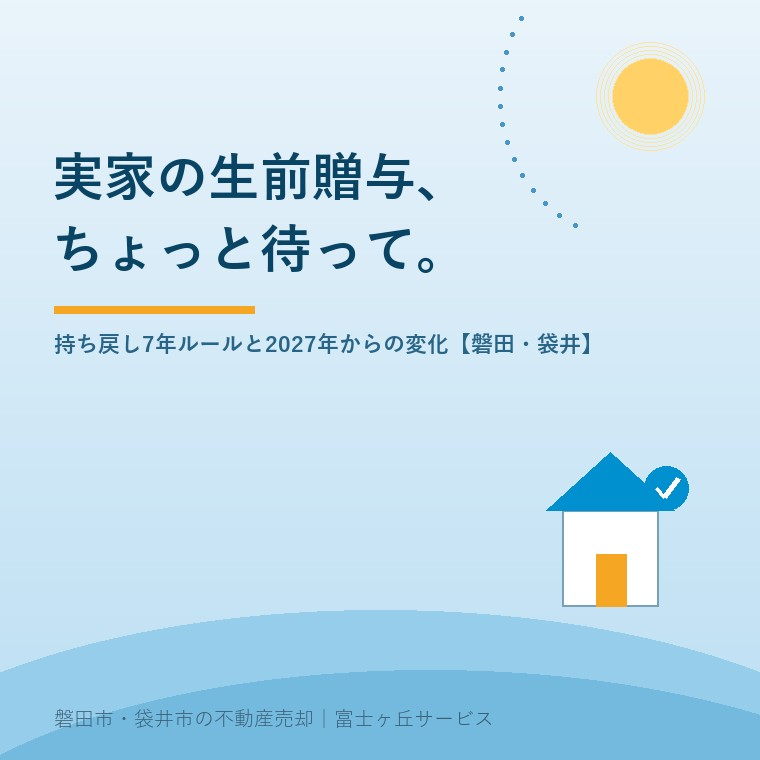

2026年7月22日｜カテゴリ：相続・生前贈与・実家じまい

この記事の要点
Q. 相続でもめないように、実家は親が元気なうちに生前贈与でもらっておいたほうがいい？
A. 実家のような不動産は、贈与だと登記や取得にかかる税負担が相続より重く、相続なら使えたはずの税の特例が使えなくなることも多いため、「とりあえず贈与」はおすすめできません。2024年の改正で贈与の持ち戻しが7年に延び、2027年1月以降の相続から実質的に効き始めるので、現金と実家それぞれの渡し方を早めに整理するのが第一歩です。磐田市・袋井市では、介護施設の運営から不動産事業を始めた富士ヶ丘サービスのような「介護×不動産」専門の会社に、実家の渡し方も含めて相談するという選択肢があります。
「相続でバタバタしないように、家は今のうちに子どもの名義にしておこうか」──お盆に家族がそろう時期、こうした話が出るご家庭は少なくありません。気持ちはとてもよく分かりますが、実は「現金の渡し方」と「実家の渡し方」では、税金のルールがまったく違います。しかも2024年の税制改正で生前贈与のルール自体が大きく変わり、その影響が来年・2027年1月以降の相続から実質的に表れ始めます。今日は、贈与を考える前に知っておきたい新ルールと、「実家は贈与に向きにくい」と言われる理由を整理します。
年間110万円までの贈与に贈与税がかからない、いわゆる暦年贈与。ただし相続の直前に駆け込みで贈与した分は、相続財産に足し戻して相続税を計算する「生前贈与加算（持ち戻し）」というルールがあります。この持ち戻しの期間が、2024年1月1日以後の贈与から、従来の「相続開始前3年」から「相続開始前7年」に延長されました。延長された4年分（死亡前4〜7年）の贈与は、総額100万円までは加算しない緩和もあります。
ポイントは、切り替えが段階的に進むことです。
| 相続が起きる時期 | 持ち戻しの対象になる贈与 |
|---|---|
| 〜2026年12月31日 | 従来どおり、相続開始前3年以内の贈与 |
| 2027年1月1日〜2030年12月31日 | 2024年1月1日以後の贈与すべて（3年超へ徐々に延長） |
| 2031年1月1日〜 | 相続開始前7年以内の贈与 |
つまり、来年2027年1月以降に起きる相続から、持ち戻し期間が実際に3年を超えて延び始めます。「元気なうちに少しずつ渡す」相続対策は、これまで以上に早く始めないと効果が出にくくなった、ということです。
2024年の改正では、もう1つの贈与の仕組み「相続時精算課税」も使いやすくなりました。累計2,500万円までの特別控除に加えて、年110万円の基礎控除が新設され、この基礎控除の範囲内なら贈与税の申告が不要で、相続財産への足し戻しもありません。暦年贈与の7年持ち戻しと違い、直前の贈与でも加算されないのが特長です。
ただし、相続時精算課税は一度選択すると同じ親からの贈与について暦年課税には戻れません。どちらが有利かはご家庭の資産の内容と年数で変わるため、具体的な選択は税理士に相談して決めるのが安全です。
ここまでは主に現金の話です。実家のような不動産を生前贈与でもらう場合は、相続でもらう場合と比べて、入口でかかる税金がはっきり重くなります。
| 項目 | 相続でもらう | 生前贈与でもらう |
|---|---|---|
| 登録免許税（名義変更の登記） | 固定資産税評価額の0.4％ | 固定資産税評価額の2％（5倍） |
| 不動産取得税 | かからない | かかる（住宅・土地は2027年3月31日まで標準税率3％） |
| 小規模宅地等の特例（宅地評価を最大80％減額） | 要件を満たせば使える | 使えない |
| 空き家の3,000万円特別控除（売却時） | 相続・遺贈で取得した家屋が対象 | 贈与でもらった実家は対象外 |
とくに見落とされがちなのが下の2つです。同居していた宅地などの相続税評価を大きく下げられる小規模宅地等の特例は、贈与でもらった土地には使えません。また、相続した空き家を売ったときの譲渡所得3,000万円特別控除も「相続または遺贈により取得した」家屋・敷地が要件なので、生前贈与でもらった実家を後で売っても使えません。よかれと思った贈与が、将来の売却時の税負担を増やしてしまうことがあるのです。
磐田市・袋井市の実家は敷地が広く、固定資産税評価額もそれなりの額になるため、贈与でかかる登録免許税・不動産取得税は決して小さくありません。一方で、広い敷地や農地つきの家は「評価額の割に、すぐには売りにくい」ことも多く、名義だけ子どもに移しても、使い道が決まらないまま管理負担だけが移る、という結果になりがちです。
だからこそ、順番としては「誰の名義にするか」より先に、「その実家を将来誰がどう使うのか（住む・貸す・売る・手放す）」を家族で決めることをおすすめしています。方針が決まれば、相続で渡すべきか、例外的に贈与が合うのか、自然に絞られてきます。名義を分ける話になったときは、きょうだい共有名義のリスクの記事もあわせてご覧ください。
富士ヶ丘サービスは、介護施設の運営から不動産事業を始めた会社として、介護費用の見通し・相続の準備・実家の活用や売却をひとつのテーブルでご相談いただけます。磐田市・袋井市に特化した地域密着で、「高く売る」だけでなく「家族があとで困らない渡し方・しまい方」を一緒に考えます。相続の入口の整理には相続はじめ相談室をご利用ください。
ふじがおか実家カルテ｜贈与・相続を決める前の現状確認に
名義・評価・売りやすさを、まず1冊に整理してから。
登記情報と固定資産税通知書から、名義・道路・境界・農地・建物の状態を宅建士が机上で確認します。相続はじめ相談室・実家じまい相談室もあわせてご利用ください。
本記事は2026年7月22日時点の情報をもとに作成しています。生前贈与加算・相続時精算課税・小規模宅地等の特例・空き家の3,000万円特別控除・不動産取得税などの個別の適用可否や有利不利の判断は、必ず税理士・税務署（不動産取得税は静岡県の県税事務所）へご確認ください。
磐田市・袋井市の実家じまい・相続空き家相談
固定資産税通知書だけでも相談できます
住所があいまいでも、通知書や写真から名義・道路・農地・残置物の確認順を整理します。カルテ申込またはLINEで状況を送ってください。
富士ヶ丘サービス株式会社／静岡県磐田市見付5789番地1／TEL:0538-31-3308／静岡県知事 (2) 第14083号／代表取締役・宅地建物取引士 大石 浩之